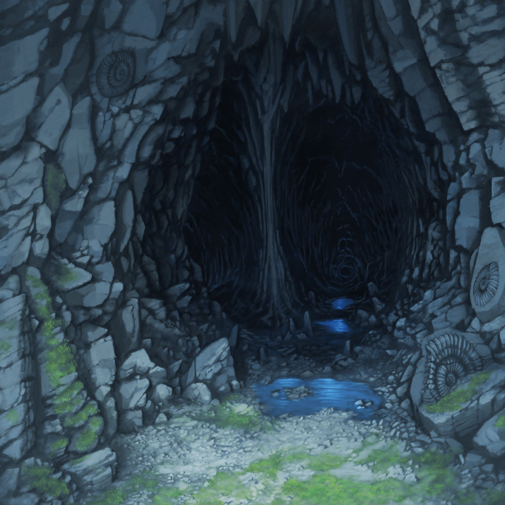

海賊の洞窟？
こころ
みんな、こっちよ！ はぐれないようについて来て！
美咲
ま、待って、こころ！
暗くて足元見えづらいんだからちゃんと懐中電灯で照らしてよ
こころ
足元ね、わかったわ！ これでいいかしら？

一同
！！？
花音
えっ？ あれ？ 真っ暗になっちゃった……！
こころ
どうしたのかしら？
懐中電灯がつかなくなっちゃったわ
美咲
それ電池切れじゃ……って、いたっ！？
美咲
ちょっ、誰……？
今、頭突きみたいなの、頭に食らったんだけど……？
はぐみ
ご、ごめん、みーくん。暗くて何も見えなくて……
うう、頭くらくらする……
薫
みんな、うかつに動かないように。
かわいい子猫ちゃんが傷つく姿なんて見たく……うっ！？
こころ
あら？ ごめんなさい、なにか踏んづけちゃったみたい
薫
そ、それは私の足だよ、こころ。
私が恋しいのはわかるが、少しじっとしていようか……
美咲
この状況なんとかしないと今にもケガ人が出そう……
あ、予備の電灯持ってきてたよね？
持ってるの、はぐみだっけ？
はぐみ
そ、そうだ！ はぐみ、持ってるよ！
えっと、どこに入れたっけ……？
はぐみ
うう、暗くてなんにも見えないよ〜！！
花音
は、はぐみちゃん、落ち着いて……！
えっと、そ、そうだ……！ ちょっとだけ待っててっ！
はぐみ
わあ！ 眩しい！
花音
スマホのライトだよ。
これで手元が見えると思うんだけど、どうかな？
はぐみ
うん、これならよく見えるよ！
ありがとう、かのちゃん先輩！
はぐみ
よーし、予備の電灯つけたよ！
これでもう大丈夫！
薫
ああ、助かったよ、はぐみ
はぐみ
ううん、はぐみじゃなくて、かのちゃん先輩のおかげだよ！
花音
た、たまたま思いついただけだよ。
でも、誰もケガしなくてよかったぁ
こころ
あ！ 見て、みんな！
あそこの横穴から奥に行けそうよ！
美咲
ホントだ、すごい奥まで続いてる。
ていうか、結構広いんだね、この洞窟……
？？？
ウオオオオオ……！
一同
！！？
はぐみ
な、何今の怖い声……？
花音
ふえぇ、この穴の奥から聞こえたよ……
な、何かいるのかな……？
美咲
そういえば、地図に『おそろしトンネル』って書いてあったよね？
もしかして、この長い横穴がそうなんじゃ……？
薫
その可能性は高そうだね。
でも、あの恐ろしい声はいったい……？
はぐみ
も、もしかしてだけど……あれ、海賊の幽霊の声じゃないかな？
花音
ゆ、幽霊？
はぐみ
だって、あんな生き物の声聞いたことないよ？
花音・薫
…………！
こころ
すごいわ！
この穴の奥に行けば幽霊さんに会えるってことね！
美咲
いやいや、そんな嬉しそうにいうことじゃないでしょ！
みんな、幽霊って聞いてひいてるんだから！
こころ
そんなに怖がることかしら？
とっても優しい幽霊さんかもしれないじゃない！
こころ
美味しいお菓子とお茶を用意してくれてるかもしれないわよ！
美咲
そんな親切な人なら、幽霊になってさまよってません
こころ
それは行ってみればわかるわ！ とにかく先に進みましょっ！
はぐみ
う、うん、みんなで行けば平気だよね？ きっと……
薫
あ、ああ、なるべく固まって歩けば、
何が来てもその、平気なはずさ……
花音
か、薫さん？ なんだか震えてるみたいだけど大丈夫……？
薫
これは武者震いだよ。
幽霊との戦いが待ち受けてるかもしれないからね
美咲
もしかして、薫さんお化けダメなんじゃ……？
花音
う、うん、そんな感じするよね。
隠そうとしてるみたいだけど
美咲
大丈夫かな……？
花音
うーん、えっと、薫さん……！
薫
なんだい、花音？
花音
あの、勇気が出る合言葉言ってみない？
花音
ハピネスハピィーマジカルって唱えれば、
きっと幽霊も怖くなくなると思うの
薫
そ、そうだね、幽霊は別に怖くはないけれど、
みんなが怖がってるなら唱えてみようか
花音
うん、それじゃ……せーのっ！
花音・薫
ハピネスっ！ ハピィーマジカルっ♪
ハピネスっ！ ハピィーマジカルっ♪
はぐみ
かのちゃん先輩？ 薫くん？
こころ
２人とも楽しそうね！ はぐみ、あたし達も一緒にやりましょう！
はぐみ
うん！ そうだね、こころん！
花音・薫・はぐみ・こころ
ハピネスっ！ ハピィーマジカルっ♪
ハピネスっ！ ハピィーマジカルっ♪
美咲
なんだこれ……？
でも、なんかみんな、表情が明るくなったかも……？
薫
勇気の出る合言葉か、素晴らしいね。
幽霊を恐れる気持ちなんてどこかへ吹き飛んでしまったよ
花音
うん、私も前にこの言葉で勇気を出すことができたんだ
？？？
ウオオオオオ……！
こころ
またあの声だわ
はぐみ
今、風が吹いた時、一緒に聞こえたよね？
美咲
それって、このトンネルを風が吹き抜ける時に鳴ってる音かも。
たぶん、それが何かの声みたいに聞こえてるんだよ
薫
なるほど。私としたことが、それは気づかなかったね
花音
うう、よかったぁ。
ホントに幽霊がいるのかと思って心配しちゃったよぉ
こころ
幽霊さんに会えないのは残念だけど、
みんなが安心ならそれでいいわ！
はぐみ
よーし、張り切って先に進もう〜！